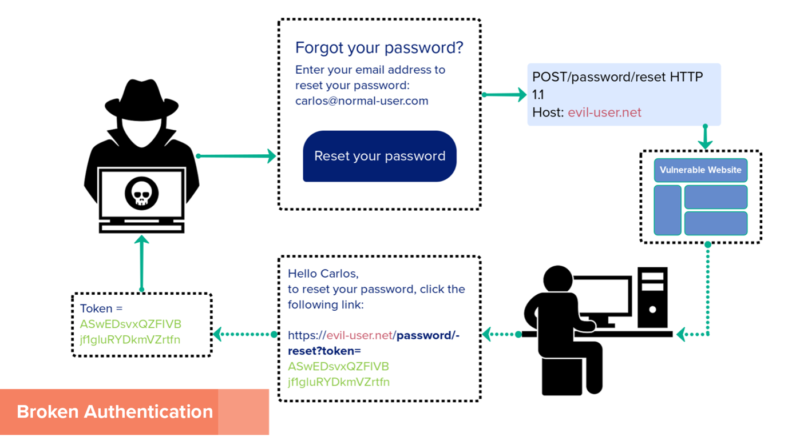
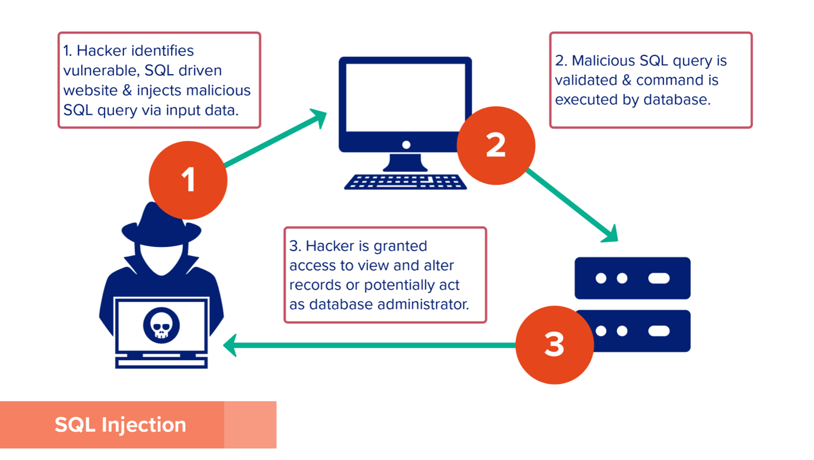
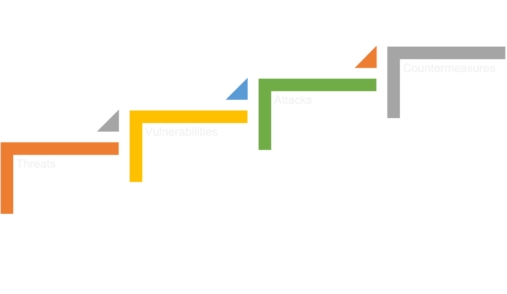
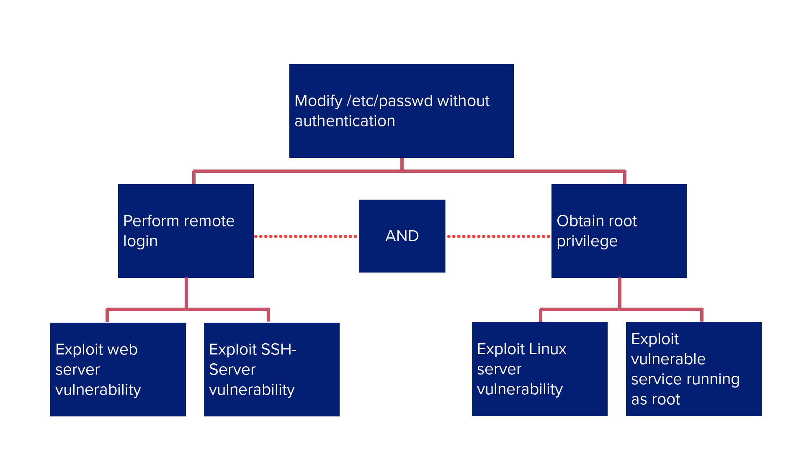

Case Study: ASMIS Security Report
Medical Centre Enquiry
As a cybersecurity professional, this is a breakdown of the needs, requirements, issues, and resolutions for a medical centre and their booking system needs.
Introduction
A community clinic is enquiring about implementing an appointment and scheduling management information system (ASMIS). The growth rate in the local demographics is putting strain on the practice; therefore, getting patients to care in good time is proving more challenging. Appointment scheduling systems “lie at the intersection of efficiency and timely access to health services” (Gupta, 2008), however, using this system there will be a great deal of sensitive information being collected, therefore presenting a very real security risk if exposed. To correctly advise the team this report will cover the benefits and problems of the ASMIS with cybersecurity in mind. To understand the potential risks, metrics, and methodologies, two UML diagrams will be presented displaying the system and its potential weaknesses. Starting with a class diagram to map how the system communicates with multiple actors. Use cases and misuse cases will be talked about extensively as they capture the functional requirements of one or more actors interacting with the system. Using a hybrid threat modelling technique, the cyber threats will be detected, assessed, and mitigated using STRIDE methodology and Attack Trees. This is followed by an analysis of multi-factor authentication, and web application firewalls, to help defend against specific attacks.Security Report
Benefits of ASMIS
A web-based appointment and scheduling management information system (ASMIS) would ensure seeing patients promptly, it is said that inefficient patient scheduling can delay medical therapy, such as radiation (Sauré, 2012), which is complex and is classified in many ways. The ASMIS would allow for specialised care to be assigned at the point of booking, rather than after an initial consultation or by the deduction from the receptionist (Gupta, 2008).
Patients will be confident they can get an appointment with less fuss, due to no phone call wait times. In addition, receptionists and general administrators are freed up for other areas of their work, feeling less overworked and increasing the ability to direct help to patients with more accuracy and care. Having fewer staff manning the portal can minimise errors due to secured logins (Akinode, 2017).
Doctors can get to the patients directly related to their expertise, and the satisfaction of doctors increases their quality of employment. An automated scheduling system allows the outpatient to register their detail online, and the Doctors can book and reject appointments. “The system will reduce the waiting time of the patient and also increase the efficiency of the Doctors” (Akinode, 2017).
Problems of ASMIS
Regardless of how much our computational landscape has improved and changed, there is still a distinct digital divide among the public. This digital divide may leave the most critical patients that require the most help. In addition, “Scheduling problems are ubiquitous, ranging from computer systems and networks to production factories and patient appointments.” (Akinode, 2017).
Patients usually undergo multiple diagnostic tests, and consultations before they are considered fully treated, and scheduling systems are usually demonstrated using single diagnostics. Whereas this is useful, it could still be optimised, so the problem of diagnostics at the point of booking is still not perfect (Marynissen, 2019). In terms of security, safeguarding health data at varying locations/departments in different forms is a concern many health institutions have (Keshta, 2021).
Privacy, security, and confidentiality are the main concerns for ASMIS. Patients and healthcare workers will use ASIMS to view and edit data, in the process, the healthcare workers could abuse the health records access whether intentionally or not. To effectively achieve confidentiality, management must focus on professional silence in electronic healthcare records, as this presents possible misuse cases. In terms of the availability of data, the information in healthcare records will be accessible by the right personnel. Therefore, professional silence, secure account login, encryption, and suitable access rights must be relied upon. Encryption is often used for health data sent across exposed networks, however, encryption is difficult to apply to data that is stored in mobile devices, therefore putting the security of patient data at risk (Keshta, 2021).
System Aspects
Possible Vulnerabilities
A vulnerability is a weakness that could be used to take advantage of to compromise the confidentiality, availability, or integrity of an asset. An electronic medical record is a prime target as the raw data has such high value. They appear through flaws, features, and user errors. Where flaws are unintended functionality, features are intended functionality which can be misused e.g., exploitation of macros. Some of the most common exploitations that can occur to electronic records are: Broken authentication, which is demonstrated in the figure below.
Figure 1 Demonstrating how broken authentication works.
For the ASMIS to be immune to this kind of user-session hijacking, it will need to make sure the web portal has sufficient security, such as Multi-Factor Authentication (MFA) (Gupta, 2022). SQL injection: SQL injection vulnerabilities can be attacked by threat actors and bypass security measures.
Figure 2 Demonstrating how SQL injection occurs.
For the ASMIS to protect against this vulnerability attack is to ensure input validation, firewalls, and turn off the visibility of database errors.
Threat Modelling Techniques
Threat modelling is a technique that helps achieve a secure design in an objective and structured way. Threats are enumerated, caused by a vulnerability, realised via an attack, and quashed by countermeasures (Sriram Krishnan, 2017).
Figure 3 Diagram to depict what threat modelling is.
STRIDE
Looking at a software system as a set of components is key in methodologies such as STRIDE (Sawano, 2019). Using STRIDE will open the analysis to all its components and is a systematic approach to identifying threats. A STRIDE-based threat modelling can provide full-proof protection, STRIDE is lightweight and effective and works by identifying component-level vulnerabilities and their potential physical consequences. It represents a mnemonic for six different security threats: Spoofing, Tampering, Repudiation, Information disclosure, Denial of Service (DoS), and Elevation of privilege (Khan, 2017).
Using the example of broken authentication. The threat scenario, in that case, is attacking the login (Conklin, n.d.). In that specific example, the attacker uses the elevation of privilege method to gain the user’s privileges, without a secure web server this could be a drastic loss for the clinic.
Threat analysis measures risk, the probability that a threat occurs, and the cost to that organisation. Combining the use case/misuse cases with threat modelling will minimise the probability the threat occurs therefore reducing the risk. To ensure all areas of security are covered, a hybrid approach with attack trees will be advised.
Attack Tree
Attack trees are conceptual representations of possible attacks whereby threats occur. They describe the security of the system based on different attacks demonstrated in a tree structure. The goal of the attack is the root node, as demonstrated below: 
Figure 4 Attack Tree example.
Once the possible attacks have been modelled in this structure, the following attributes can be applied:
Combined with STRIDE categorisation, attack trees allow organisations to go deeper into prevention tactics by adding a quantifiable attribute assignment, which is why this is a powerful threat modelling duo. Albeit it may not always be possible to quantify all these attributes immediately if the clinic has specific goals and definitive categories of attacks laid out then the clinic can prevent numerous attacks towards its system (Sriram Krishnan, 2017).
Technologies to Address
Multi-Factor Authentication
Using multi-factor authentication would be the strongest way to protect against a user session attack. One-time pins are used as a typical MFA component (OTP) through email, text, etc. MFA methods incorporate knowledge, possession, and inheritance. An example can be seen by Bartłomiejczyk et al whereby MFA protocol is implemented in a mobile environment showing the resilience of MFA in terms of man-in-the-middle attack resistance, and broken authentication attacks (Bartłomiejczyk, 2019).
Strengths of MFA
Forcing users to identify themselves with more credentials strengthens general security as the security check is run independently and not through the clinic’s portal. It reduces the risk of passwords being stolen by halting the user session hijack, if the hacker cannot access the user’s email or phone they are blocked and cannot steal the password via a broken authentication (Odmin, 2022).
Weaknesses of MFA
Unfortunately, with the rising adoption of MFA, attackers have developed loopholes. Attackers can use credential-stealing malware, and cyber insecure users of the portal could be tricked. These attacks steal MFA codes, certificates, or authentication cookies from browsers (Kime, 2022). In addition, they can be a complex process and demanding to implement (Bartłomiejczyk, 2019).
Web Application Firewall
Another prevention that would directly help against SQL injection, is implementing a web application firewall (WAF), which acts as a shield placed between the application and the internet. It operates through a set of policies to protect against vulnerabilities. An example can be seen from Prandl et al where the WAF ModSecurity was tested and found to have “the best balance between blocking malicious traffic and allowing normal traffic through” (Prandl, 2015, p. 508).
Strengths of WAF
Host-based WAF is inexpensive and can be easily customised, it can effectively block out malicious traffic that attempts to interfere with the portal. Firewalls in general have better security and network monitoring features and can allow for more network functionality (Cloudflare, 2022).
Weaknesses of WAF
WAF consumes local server resources, has a complex implementation, and has high maintenance costs. This may take a lot of time so therefore could be costly for the clinic. Thus, slowing down the process or halting it altogether (Cloudflare, 2022).
Conclusions
To motivate clinics to use an ASMIS they must employ hybrid threat modelling techniques by combining STRIDE and attack trees. It is paramount for success to adopt a structured approach, thus why using more than one methodology is key for employing security as a component of the software-development lifecycle, rather than a bonus feature. If attacks are planned against, the security design will either thwart attacks completely or provide layers of security, such as MFA and WAF, that attackers will have to infiltrate to achieve their bounties. Thus, making the process more difficult or less cost-effective for the threat actor. In addition, combining these steps with STRIDE-based threat modelling can provide full-proof protection. Unfortunately, an attacker can achieve an objective by exploiting threats through the users themselves via credential theft. But by identifying component-level vulnerabilities and their potential physical consequences, STRIDE can provide comprehensive and effective solutions for this due to the extensive nature of the methodology.
Works Cited
1. Akinode, J. L., 2017. Design and Implementation of a Patient Appointment and Scheduling System. International Advanced Research Journal in Science, Engineering and Technology, 4(12), pp. 16-23.
2. Bartłomiejczyk, M., 2019. Multifactor Authentication Protocol in a Mobile Environment. IEEE Access, Volume 7, pp. 157185-157199.
3. Cloudflare, 2022. What is a WAF? | Web Application Firewall explained. [Online] Available at: https://www.cloudflare.com/en-gb/learning/ddos/glossary/web-application-firewall-waf/ [Accessed 20 November 2022].
4. Conklin, L., n.d. Threat Modeling Process. [Online] Available at: https://owasp.org/www-community/Threat_Modeling_Process [Accessed 19 November 2022].
5. Damodaran, M., 2006. Secure Software Development Using Use Cases and Misuse Cases. Issues in Information Systems, Volume 7.
6. Gupta, D., 2008. Appointment scheduling in health care: Challenges and opportunities. IIE Transactions , 40(9), pp. 800-819.
7. Gupta, D., 2022. Login Radius. [Online] Available at: https://blog.loginradius.com/identity/what-is-broken-authentication/ [Accessed 19 November 2022].
8. Keshta, I., 2021. Security and privacy of electronic health records: Concerns and challenges. Egyptian Informatics Journal, 22(2), pp. 177-183.
9. Khan, R., Mclaughlin, K., Laverty, D. & Sezer, S. (2017) STRIDE-based threat modeling for cyber-physical systems. In: [Online]. 2017 p. Available from: doi:10.1109/isgteurope.2017.8260283.
10. Kime, C., 2022. MFA Advantages and Weaknesses. [Online] Available at: https://www.esecurityplanet.com/applications/mfa-advantages-and-weaknesses/ [Accessed 20 November 2022].
11. Marynissen, J., 2019. Literature review on multi-appointment scheduling problems in hospitals. European Journal of Operational Research, 272(2), pp. 407-419. 12. Odmin, 2022. Benefits Of Multi-Factor Authentication. [Online] Available at: https://password-saver.com/benefits-of-multi-factor-authentication/?utm_source=google&utm_medium=cpc&utm_campaign=inweb_SER_password-saver_Statti_UK&utm_content=582190949461&utm_term=benefits%20of%20multi%20factor%20authentication&gclid=Cj0KCQiAveebBhD_AR [Accessed 20 November 2022].13. Prandl, S., 2015. A Study of Web Application Firewall Solutions. Information Systems Security, Volume 9478, pp. 501-510.
14. Sauré, A., 2012. Dynamic multi-appointment patient scheduling for radiation therapy. European Journal of Operational Research, 223(2), pp. 573-584.
15. Sawano, D. B. J. &. D. D., 2019. Secure by Design. New York: Manning Publications Co. LLC.
16. Sriram Krishnan, 2017. A Hybrid Approach to Threat Modelling. [Online] Available at: https://blogs. sans. org/appsecstreetfighter/files/2017/03/A-Hybrid-Approach-to-Threat-Modelling. pdf